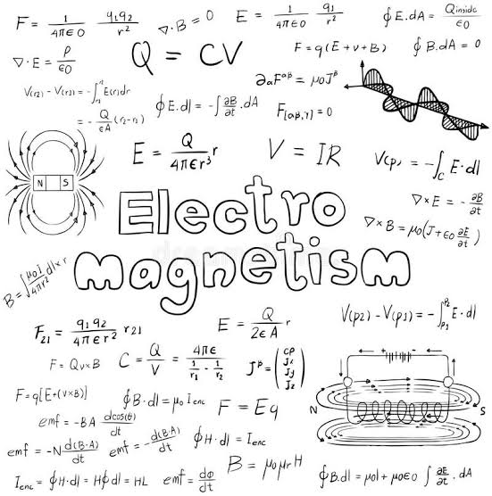
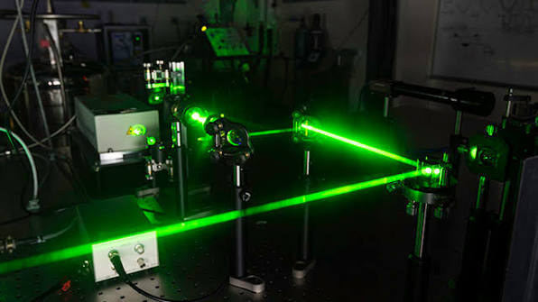
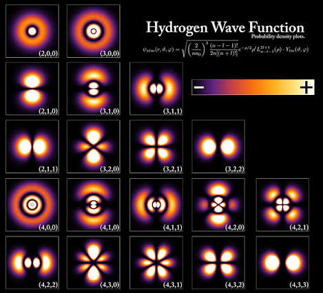

Mechanism
Notes on classical mechanics, including motion, forces, energy, momentum, oscillations, rigid bodies, and the mathematical structure behind Newtonian dynamics...

Electromagnetism
An introduction to electric and magnetic fields, potentials, Maxwell equations, electromagnetic waves, circuits, and the interaction between charges, currents, and materials...
Thermodynamics and Statistical Physics
Notes on temperature, entropy, free energy, ensembles, kinetic theory, phase transitions, and the microscopic interpretation of macroscopic thermodynamic laws...

Optics
A study of light through geometric and wave optics, covering reflection, refraction, interference, diffraction, polarization, lenses, and optical instruments...

Quantum Physics
Notes on wave functions, operators, the Schrodinger equation, measurement, angular momentum, perturbation methods, and the probabilistic structure of microscopic systems...